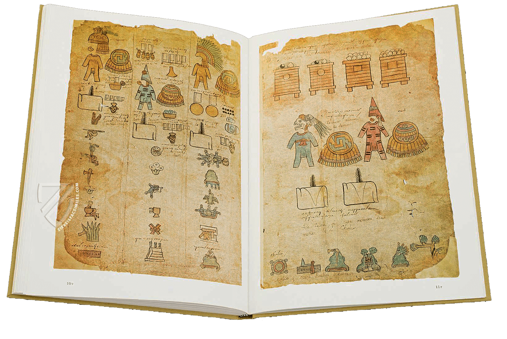
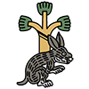

手抄本
介绍
《贡品清单》(Matrícula de Tributos) 手抄本是由32页、16张阿玛塔 (amate) 树皮纸组成的。虽然前面一部分已严重损坏，但整体尺寸为 29 × 42 厘米。这些阿玛塔 (amate) 树皮纸最初只在一面进行绘制，历史可能可以追溯到征服特诺奇蒂特兰之前。然而，在殖民时期的某个时候，这些单独的单面纸张被粘在一起。这让这份文档成了现在还这个样子，其中每个页面的正面和反面都有图像。
《贡品清单》记录了阿兹特克朝贡帝国的地理范围。 第一页显示了戒备森严的边境驻军。 其余页面，“文件的大部分”，重点关注不同的上贡省份。 他们的图像描绘了阿兹特克人要求上贡的城镇的符号，并列出了根据记载每 80 天送到特诺奇蒂特兰的贡品（羽毛、武士战袍、美洲豹皮）。
除了原始的图形符号外，《贡品清单》上还覆盖有后来的字母说明。 有些是在十六世纪添加的纳瓦特语。 其余西班牙语是在十八世纪添加的。 《贡品清单》目前收藏于墨西哥城国家人类学图书馆。
通常来说，《贡品清单》每页的阅读顺序都是从左下角开始，然后向上移动到页面。 绘制的符号展示了城镇（通过山、河流、神庙、树木的图画来体现）、不同种类的贡品（武士战袍、成束羽毛、蜂蜜）和人脸（代表边境驻军的总督、死去的国王和俘虏）。 这些图画细节上的细微差别表明，母体图像是由许多不同的抄写员绘制的——根据胡安·何塞·巴塔拉·罗萨多 (Juan José Batalla Rosado) 的说法，共有六位抄写员。
除了这些绘画图像之外，《贡品清单》的每一页还包含字母注释。 这些“注释”或简短摘要是用西班牙语和纳瓦特语写成的。 它们是在欧洲人到来后添加的，并解释了所绘制的图像。 纳瓦特语注释似乎是首先写成的，而西班牙语注释则是基于这些注释的翻译（而不是基于对绘画符号本身的研究）。

由 Akademische Drucku 出版的《贡品清单》影印本。1980年，Verlagsanstalt (ADEVA)。
页面目录

帝国边境驻军
01页
第1张正面
帝国边境驻军
02页
第1张反面
特拉特洛尔科
的贡品
03页
第2张正面

佩特拉卡勒科省
的贡品
04页
第2张反面

阿科瓦坎省
的贡品
05页
第3张正面

库阿纳瓦科省
的贡品
06页
第3张反面
瓦特佩克省
的贡品
07页
第4张正面
夸奥蒂特兰省
的贡品
08页
第4张反面
维普奇特兰省
的贡品
09页
第5张正面
阿托托尼尔科省
的贡品
10页
第5张反面

希洛特佩克省
的贡品
11页
第6张正面

夸瓦坎省
的贡品
12页
第6张反面
托路坎省
的贡品
13页
第7张正面
奥奎兰省
的贡品
14页
第7张反面


马琳纳科省
的贡品
索科蒂特兰省
的贡品
15页
第8张正面
特拉彻科省
的贡品
16页
第8张反面
特佩夸奎尔科省
的贡品
17页
第9张正面
锡瓦特兰省
的贡品
18页
第9张反面

特拉潘省
的贡品
19页
第10张正面


特拉科扎乌蒂特兰省
的贡品
奎阿乌特奥潘省
的贡品
尤阿特佩克省
的贡品
20页
第10张反面
查尔科省
的贡品
21页
第11张正面
特佩亚卡克省
的贡品
22页
第11张反面
库埃斯特拉瓦坎省
的贡品
23页
第12张正面

科尤拉潘省
的贡品
24页
第12张反面
索科诺彻科省
的贡品
25页
第13张正面

夸乌托彻科省
的贡品
26页
第13张反面
奎特拉斯特兰省
的贡品
27页
第14张正面
特拉帕科颜省
的贡品
28页
第14张反面

特拉特拉乌奎特佩克省
的贡品
29页
第15张正面
托彻潘省
的贡品
30页
第15张反面
阿特兰省
的贡品
31页
第16张正面
兹克阿克省
的贡品